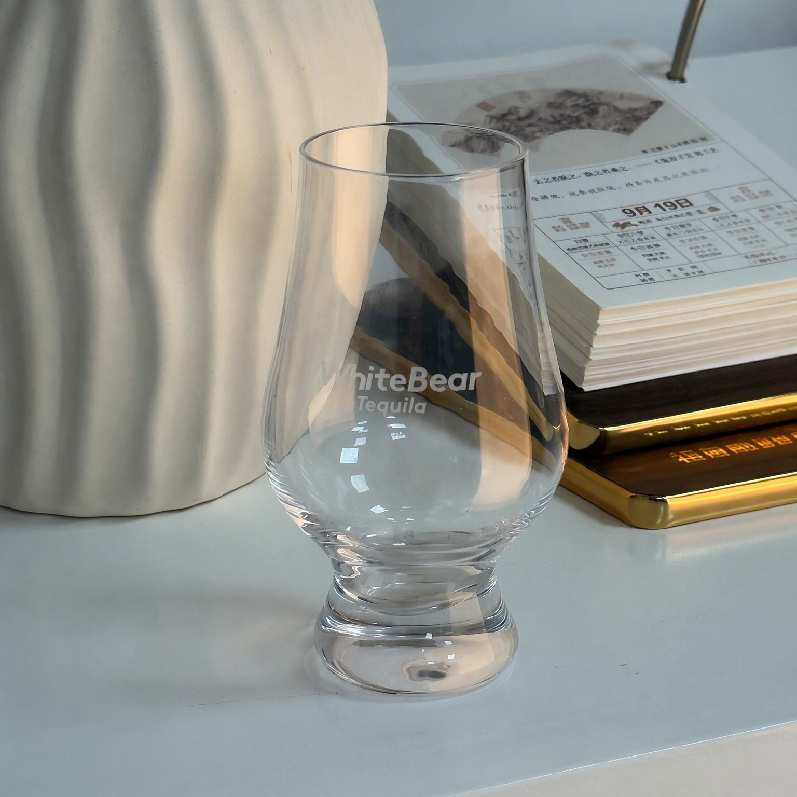
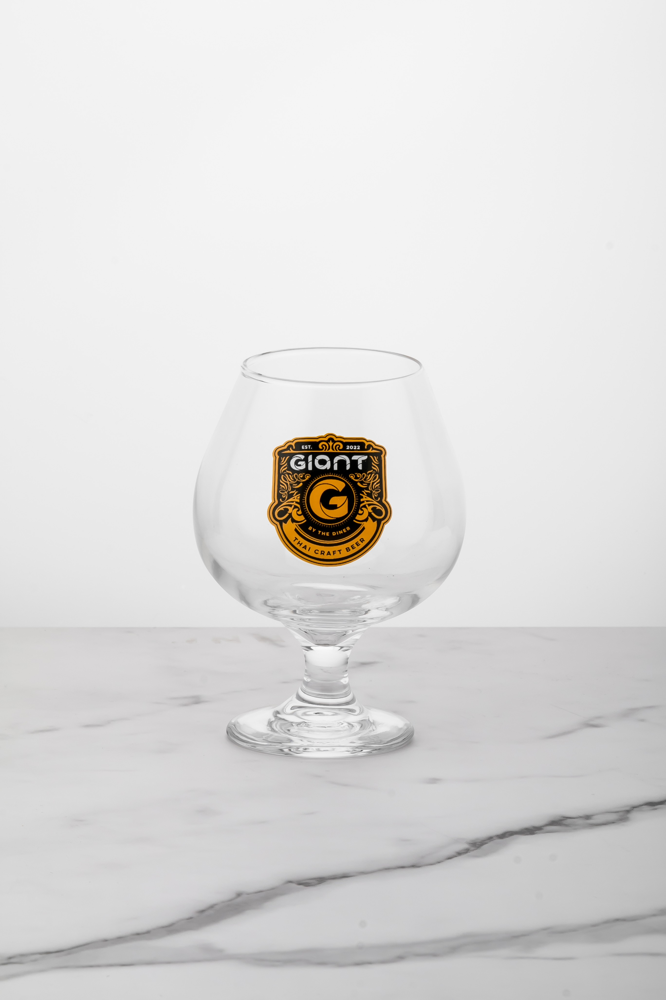
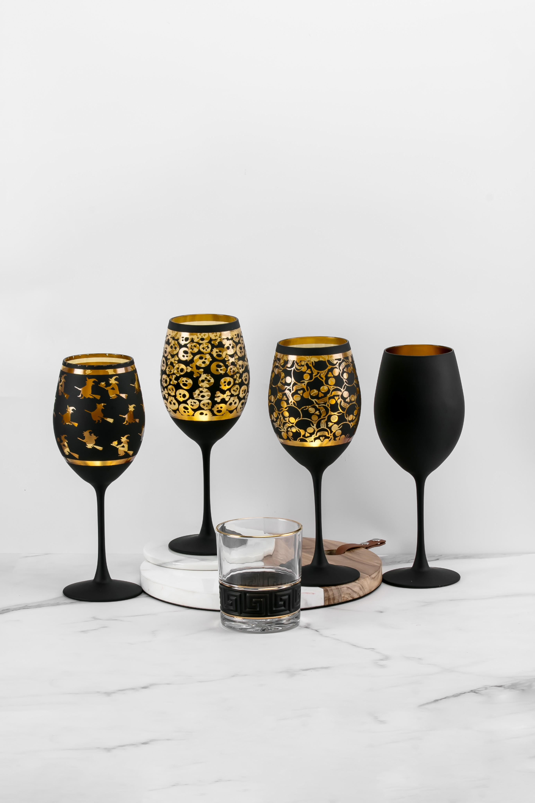
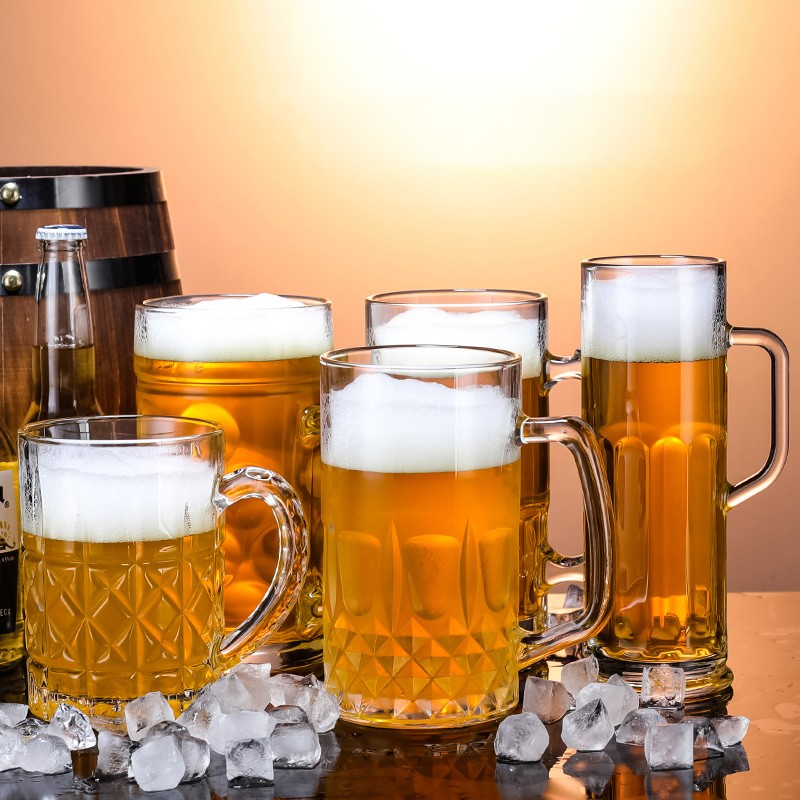
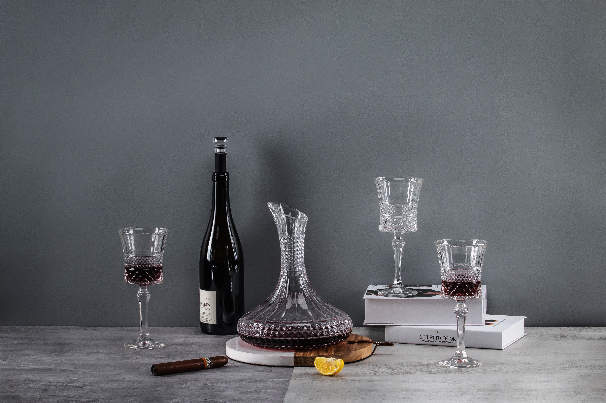
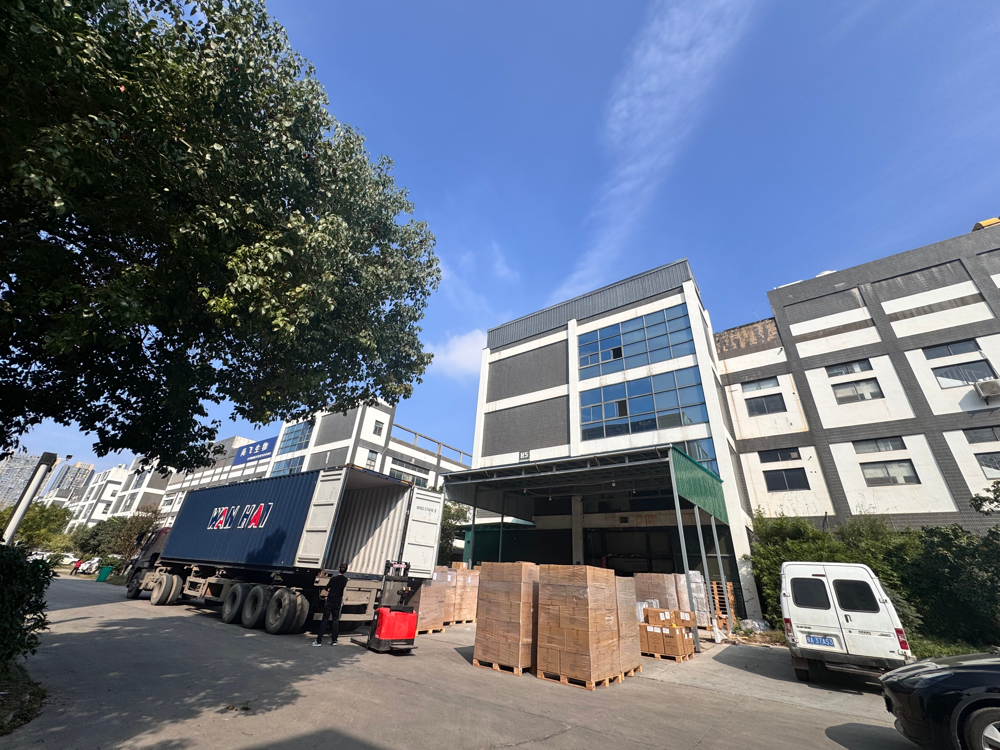
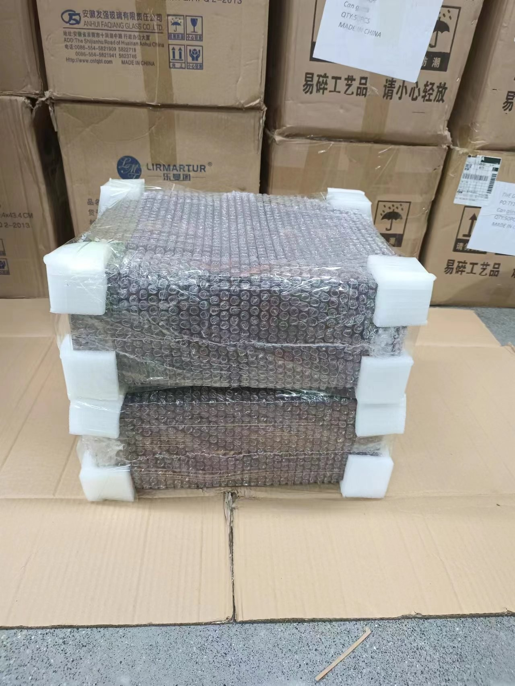
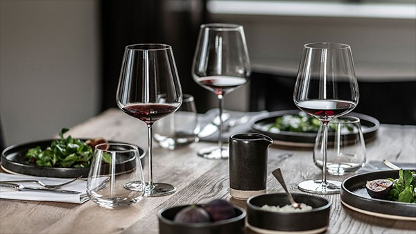
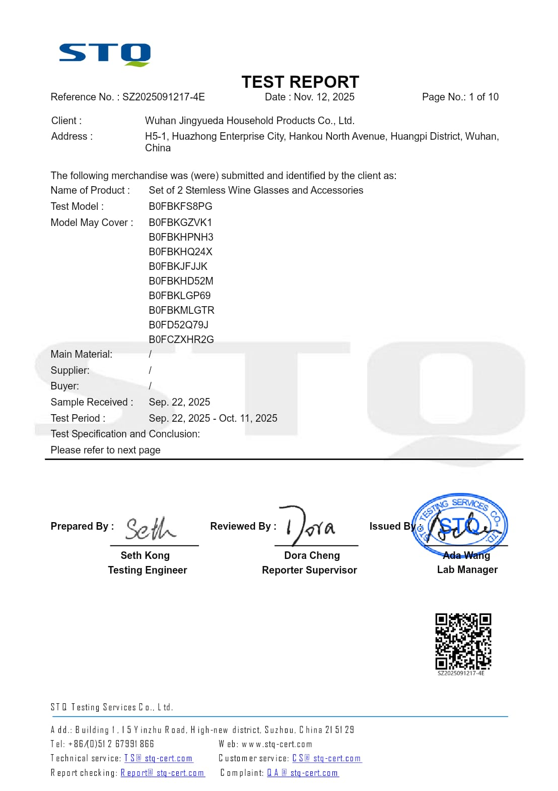

Technical comparisons, inventory formulas, and international customs testing standards written for hospitality directors, brand buyers, and procurement specialists.
Laser Engraving vs 580°C Ceramic Decals for Glassware: Durability, Setup Costs & Sourcing Best Practices
A practical decision framework for brand managers and procurement specialists evaluating physical durability, dishwashing wear, and volume economics.
Quick Answer: Choose laser engraving for understated, permanent, tactile frosting on glassware surfaces, individual recipient monograms, and short lead-time executive gift suites. Choose 580°C high-fire ceramic decals when the design demands vibrant multi-color brand pantones, opaque white crests, 360° circumferential wraps, or high-volume commercial dishwasher resilience where the mineral pigments fuse permanently into the glaze.

Laser Engraving Real Sample: Crisp frosted tactile logo on crystal tasting glass — permanent surface micro-ablation with no inks, zero fading, and fast proofing.

580°C Ceramic Decal Sample: Fired gold & black mineral glaze on stemmed craft beer glass — completely fused into the silica substrate for commercial dishwashing.
1. Technical Process Comparison
When custom branding glassware, procurement teams often weigh unit costs before understanding the underlying physical bonding mechanisms. Laser engraving uses high-intensity CO2 or fiber laser beams to micro-fracture the glass surface, producing a crisp, tactile frosted mark that never peels or fades because no inks or consumables are applied. Conversely, ceramic decals utilize inorganic mineral pigments applied via silk-screen transfers, which are then baked in a high-temperature conveyor lehr kiln at 580°C–600°C. During firing, the flux in the decal melts and permanently fuses with the glass silica substrate.
Commercial grade; passes standard alkaline detergent cycles
Variable Data / Personalization
Ideal for individual monograms & short runs
Requires individual screen/film plates per variation
Tactile Sensation
Distinct recessed textured feel
Smooth, flush or slight embossed gloss feel
Best Sourcing Fit
Corporate gift sets, executive decanters, bar logos
Chain restaurant branding, festival commemorative series
2. Choosing the Right Method for Your Sourcing Scenario
🎁 Corporate & VIP Gift Suites
For executive presentation sets (such as whiskey decanter wooden boxes), laser engraving on both the glassware and the solid pine box lid delivers a premium, cohesive aesthetic. Pair with odorless EPE pearl cotton inserts for clean unboxing presentation.
🍷 Chain Hospitality & Bar Rollouts
For high-turnover bar venues running glasses through industrial undercounter dishwashers multiple times per night, single-color ceramic decals fired at 580°C maintain crisp brand visibility without wearing away under high-temperature sanitizing cycles.
⚡ Limited Editions & Fast Proofing
When launching seasonal tasting events or personalized DTC gift campaigns with varying names, laser proofing offers rapid turnaround without custom film plate fees.

Advanced Multi-Process Crafting: Full matte black outer spray coating combined with high-fire gold decals and gold-trimmed rims for premium seasonal collections and bespoke hospitality branding.

High-Turnover Barware: Heavy-base beer mugs and pub steins with thick molded bottoms engineered to prevent bar-top tipping.

Banquet & VIP Suites: Coordinating diamond-cut decanter suites and stemmed glassware for executive hospitality rooms.

Factory Logistics & Port Dispatch: Direct container loading at factory loading bay with palletized master cartons and complete HS Code 7013.37 customs declarations.

Export Packaging & Impact Protection: Reinforced odorless EPE pearl cotton corner protectors and moisture-proof stretch wrap to protect cargo throughout international transit.
Need Custom Branding Advice for Your Glassware Order?
Submit your vector artwork and target quantities for an itemized decoration quotation and digital mockup.
Can laser engraving weaken the structural integrity of thin crystal glassware?
Our precision laser parameters are calibrated for thin crystal stems and bowls, maintaining a shallow etching depth that creates tactile contrast without introducing micro-stress points.
What file formats are required for custom glassware decoration?
We accept vector formats including AI, EPS, PDF, and high-resolution SVG files. For ceramic decals, Pantone solid coated color codes are requested.
Bar & Restaurant Glassware Par Level Calculation: Formulas, Turn Rates & Breakage Allowances
A quantitative procurement framework for food & beverage directors and bar managers calculating opening glassware orders, replenishment cycles, and storage logistics.
Quick Answer: Commercial food and beverage venues should maintain an operating glassware par level of 2.5× to 3.5× seating capacity for high-turnover beverage categories (such as water tumblers, house draft beer mugs, and all-purpose wine glasses), and 1.5× to 2.0× for specialty cocktail and digestif glassware. An opening order should include a 15%–20% annual breakage allowance to ensure seamless service during peak weekend turns.
Example: A 120-seat high-volume restaurant with 2.5 peak turns requires ~360 all-purpose wine glasses (3.0× par) for active service, dishwashing cycles, and reserve stock.

Commercial Dining Par Level in Service: Fine-dining table setup with crystal red wine glasses and water tumblers — a 2.5× to 3.5× par multiplier ensures uninterrupted service during peak turnover.
1. Standard Glassware Multiplier by Hospitality Category
Glassware Category
Recommended Par Multiplier
Service Location Breakdown
Rack Clearance & Storage Tip
Water Tumblers & Highballs
3.0× – 3.5× total seats
1.0× Table, 1.0× Dish Pit, 1.0× Back Stock
Select straight-sided or stackable models (e.g., XZ0486)
Red & White Wine Glasses
2.5× – 3.0× dining seats
1.0× Table Setting, 0.8× Service, 0.7× Stock
Verify rack pocket height (min 230mm for tall stems)
Champagne & Sparkling Flutes
1.5× – 2.0× dining seats
0.5× Service, 1.0× Event Prep, 0.5× Reserve
Use 36-compartment glass racks with extenders
Craft Beer Mugs & Steins
2.5× – 3.0× bar/dining seats
1.0× Tap Line, 1.0× Washing, 1.0× Chilling
Heavy base glasses (e.g., XZ703) resist bar-top tipping
Whiskey Rocks & Lowballs
2.0× – 2.5× bar seats
0.8× Bar Rail, 0.7× Washing, 0.5× Reserve
Ensure wide bowl (min 78mm) for large ice spheres
2. Mitigating Glassware Breakage in High-Volume Operations
Breakage is an inevitable operating cost in commercial dining, typically averaging 2%–4% per month in well-managed venues and up to 8% during seasonal rushes. Procurement teams can significantly reduce replacement frequency by specifying cold-cut fire-polished rims rather than brittle rolled rims, verifying stem-to-bowl weld thickness, and standardizing master carton CBM planning to avoid overcrowded storage rooms.
Advanced Multi-Process Crafting: Full matte black outer spray coating combined with high-fire gold decals and gold-trimmed rims for premium seasonal collections and bespoke hospitality branding.
Factory Logistics & Port Dispatch: Direct container loading at factory loading bay with palletized master cartons and complete HS Code 7013.37 customs declarations.Export Packaging & Impact Protection: Reinforced odorless EPE pearl cotton corner protectors and moisture-proof stretch wrap to protect cargo throughout international transit.
Planning a Commercial Hospitality Opening or Restock?
Download our 2026 Commercial Hospitality Catalog covering 33 high-durability SKUs with full carton CBM data.
How does delivery lead time impact our glassware par level calculation?
If replenishments require ocean freight (25–35 days), venues should increase back-stock reserves by an additional 0.5× to 1.0× par to prevent stockouts during shipping windows.
Can we consolidate mixed glassware SKUs into one container load?
Yes. Jingyue Glass supports mixed-container pallet consolidation across wine glasses, beer mugs, and cocktail ware to optimize shipping CBM for restaurant groups.
Buyer Guide 03Customs & ComplianceUS / EU Standards
Glassware Customs Clearance: Essential Testing & Certificates for US (FDA / Prop 65) and EU (LFGB)
A compliance guide for importers, logistics directors, and brand buyers navigating food-contact safety standards, lead/cadmium leach limits, and customs documentation.
Quick Answer: Glassware imported into the United States must comply with FDA CPG 7117.06/07 food-contact safety criteria (ASTM C738 leach testing for lead and cadmium) and California Proposition 65 thresholds. Shipments to the European Union require compliance with Framework Regulation (EC) No 1935/2004 and German LFGB Section 30/31. All shipments must declare Harmonized Tariff Schedule (HTS) Code 7013.37 for commercial drinking glasses.

Official Test Report (Report # SZ2025091217-4E): STQ Testing Services California Proposition 65 Food Contact Test Report issued for Wuhan Jingyueda Household Products Co., Ltd. — Verified PASS on extractable lead & cadmium.
1. Regulatory Compliance Matrix for US & EU Imports
Regulatory Standard
Jurisdiction
Testing Method & Parameter
Pass / Compliance Threshold
FDA CPG 7117.06 / 7117.07
United States (Federal)
ASTM C738 acid leach testing (24h 4% acetic acid)
Lead (Pb) < 0.5 – 1.5 ppm, Cadmium (Cd) < 0.5 ppm depending on vessel volume
California Proposition 65
California, USA
Total lead/cadmium content & exterior lip-rim leach
Pb < 200 ppm total (or clear warning label statement)
EC Regulation 1935/2004
European Union
Overall migration & specific heavy metal transfer
Food contact safe; no organoleptic alteration of beverage
German LFGB (§ 30 & 31)
Germany / EU Strict
Heavy metal release & sensory taste/odor evaluation
Non-detectable heavy metal leaching; zero chemical odor
Commercial Invoice & Packing List: Itemized SKU descriptions, net/gross weights, carton dimensions, and accurate HS Code (7013.37.00 for lead-free drinking glasses; 7013.99.00 for decanters).
Third-Party Laboratory Test Reports: Accredited test certificates from ISO 17025 certified labs (such as SGS, TÜV, or Intertek) issued within the past 12–24 months.
FDA Prior Notice Confirmation: Required for commercial container entry into US ports prior to vessel docking.
Packaging Material Declarations: Declaration of solid wood heat treatment (ISPM 15 stamp for solid pine boxes) and odorless EPE pearl cotton insert compliance with EU PPWR packaging rules.
Advanced Multi-Process Crafting: Full matte black outer spray coating combined with high-fire gold decals and gold-trimmed rims for premium seasonal collections and bespoke hospitality branding.
Factory Logistics & Port Dispatch: Direct container loading at factory loading bay with palletized master cartons and complete HS Code 7013.37 customs declarations.Export Packaging & Impact Protection: Reinforced odorless EPE pearl cotton corner protectors and moisture-proof stretch wrap to protect cargo throughout international transit.
Need Testing Reports & Customs Support for Your Shipment?
Review our verified certifications and request laboratory test documentation for your destination port.
Does lead-free crystal glassware require FDA approval prior to import?
Glassware does not require pre-market approval, but it is subject to FDA import surveillance and must possess valid test certificates proving compliance with CPG 7117.06/07 heavy metal release limits.
Do solid wooden presentation boxes require ISPM 15 fumigation stamps?
Yes. Solid natural pine wooden boxes shipped internationally require heat treatment and compliant IPPC/ISPM 15 stamping to clear US/EU agricultural inspections.